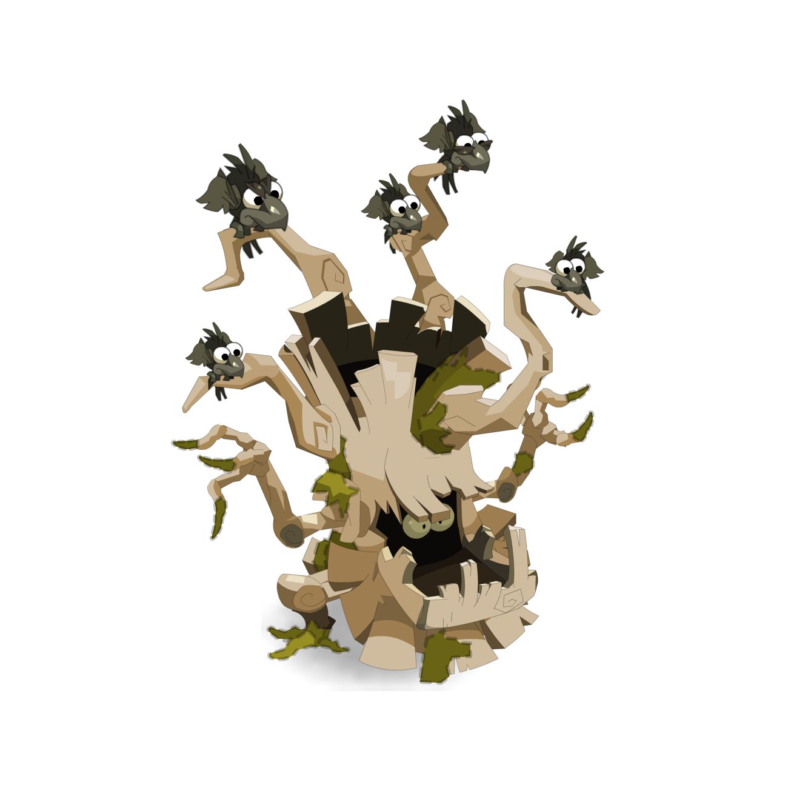

Gardien du Domaine Ancestral
Abraknyde Ancestral
'Abraknyde Ancestral est le gardien du Domaine Ancestral et l'un des plus anciens habitants de la forêt des Abraknydes. Considere comme le plus vieux magicien de la forêt, il possède une connaissance immense des lieux et de leurs secrets.
Son grand âge semble toutefois parfois affecter sa raison. Autrefois, l'Abraknyde Ancestral était le plus fidèle lieutenant du Chêne Mou. Avec le temps, il prit cependant son indépendance et établit son autorité sur la partie orientale de la forêt.
Le Chêne Mou conserva quant à lui son influencé sur la partie occidentale. Malgré cette séparation, les deux puissantes créatures demeurent étroitement liées à l'histoire et à l'équilibre de la forêt des Abraknydes.
L'Abraknyde Ancestral abrite de nombreux Corbacs dans ses branches et veille jalousement sur eux. Il menace d'ailleurs de transformer en souches d'arbres quiconque tenterait de leur faire du mal.
Sa maîtrise de la magie est telle qu'il aurait accidentellement ensorcele Nyee, provoquant sa transformation en reine des Arak-Hai. Loin de lui être reconnaissante, Nyee refusa pourtant de servir un Abraknyde et entreprit de prendre le contrôle des bois situés aux abords de son domaine.